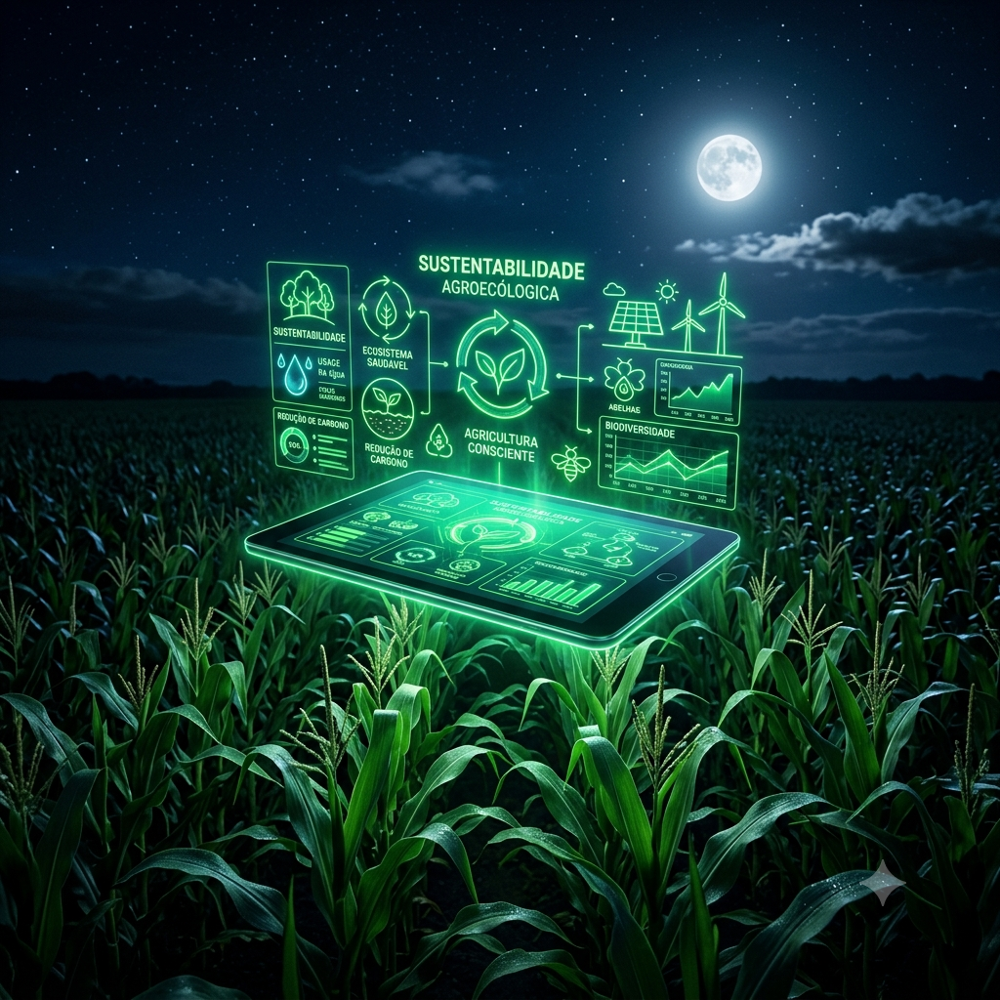

O Cenário Atual
O agronegócio é o motor mais importante da economia do Brasil. Ele lidera a produção mundial de alimentos, gera milhões de empregos e impulsiona o desenvolvimento de comunidades inteiras.
No entanto, o grande desafio do nosso século não é apenas produzir em grande escala, mas descobrir como fazer isso cuidando ativamente do meio ambiente para garantir a segurança alimentar das próximas gerações.

A Importância do Agronegócio
O ecossistema do agronegócio vai muito além do que é plantado no campo. Ele funciona como uma imensa engrenagem que está presente diretamente no cultivo da terra, na criação planejada de animais, no setor logístico de transporte, na força da indústria de maquinários e no comércio global. É essa cadeia estruturada que garante o abastecimento diário das cidades e sustenta o crescimento econômico nacional.
Sustentabilidade no Campo
Praticar a sustentabilidade no campo significa adotar métodos científicos e conscientes para produzir alimentos sem esgotar ou destruir as nossas riquezas naturais. Entre as ações práticas indispensáveis adotadas pelos produtores modernos estão a preservação total de nascentes de água, o manejo correto para evitar a erosão do solo, o uso circular e econômico da água e o combate severo ao desmatamento ilegal.
Tecnologias Sustentáveis
A tecnologia de ponta transformou o produtor rural. Hoje, as ferramentas digitais permitem mapear e trabalhar a terra com precisão milimétrica, poupando insumos e gerando o mínimo impacto ambiental:

Agricultura de Precisão
Uso de satélites e GPS para aplicar fertilizantes e água apenas nos pontos necessários do campo.
Irrigação Inteligente
Sistemas automatizados que calculam a umidade do solo para evitar qualquer desperdício de água.
Drones Agrícolas
Mapeamento aéreo detalhado para identificar pragas precocemente sem aplicar defensivos na lavoura inteira.
Energia Solar no Campo
Instalação de painéis fotovoltaicos para abastecer bombas de irrigação e estruturas com energia limpa.
Sensores de Solo
Dispositivos enterrados que enviam leituras em tempo real sobre a saúde e a necessidade nutricional da terra.
Desafios Ambientais
O caminho para o futuro exige encarar problemas complexos de frente. O setor trabalha ativamente para mitigar e resolver os principais gargalos ecológicos atuais:
Desmatamento
Eliminar a derrubada ilegal através de monitoramento por satélite e rastreabilidade da produção.
Emissão de Carbono
Reduzir gases estufa adotando o plantio direto na palha e sistemas de integração lavoura-pecuária.
Poluição do Solo
Substituir defensivos químicos tradicionais por produtos biológicos e defensivos orgânicos.